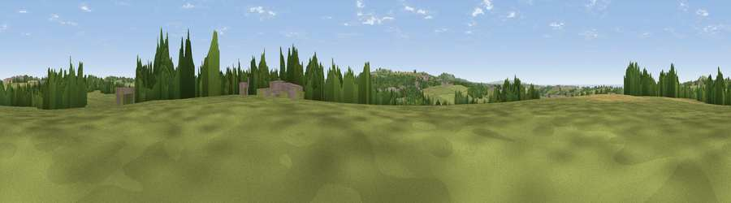

Viewpoint near Scorrier
#21658 in England · top 44% of its area beats it · near ScorrierWhere it is
The exact computed spot (SW 72217 45347). Click the marker for map links.
The view, rendered

A 360° render of this exact spot computed from the terrain model, tree cover and land cover — summer colours, afternoon light, calibrated against photographs of famous viewpoints. Real trees, hedges and buildings will differ in detail.
The panorama
Grey silhouette: terrain skyline in each direction (720 bearings, Earth curvature and refraction included). Dashed green: skyline with trees (+15 m) and buildings (+8 m) as obstacles. Blue strip: how far the ground is visible on each bearing.
Where the view opens
Wedge length = distance to the farthest visible ground on that bearing (vegetation-aware). Rings at 10, 25 and 50 km.
What fills the view
62% grassland · 21% woodland · 8% cropland · 7% built-up · 3% water
Angular shares of the visible panorama (visual magnitude), not map area. Landscape diversity 0.48 (0–1 Shannon).
Key numbers
More beautiful places nearby
The staircase of upgrades: each row has a higher view potential than everything closer. Driving times are estimates from straight-line distance, calibrated against real road routing — check an actual route before setting out.
| Place | Direction | Drive | Score |
|---|---|---|---|
| Viewpoint near Redruth | SSW · 3 km | ~7 min | 69.1 |
| Viewpoint near Lanner | S · 5 km | ~10 min | 74.5 |
| St Agnes Beacon | NNW · 5 km | ~11 min | 86.1 |
| Rosewall Hill | WSW · 24 km | ~39 min | 88.0 |
| Viewpoint near Combe Martin | NE · 135 km | ~158 min | 88.9 |
| Holdstone Hill | NE · 136 km | ~160 min | 90.2 |
| The Knoll | ENE · 186 km | ~205 min | 91.0 |
50.26407, -5.19745 · source: osm peak · position refined by local search. Computed location — check access rights before visiting.